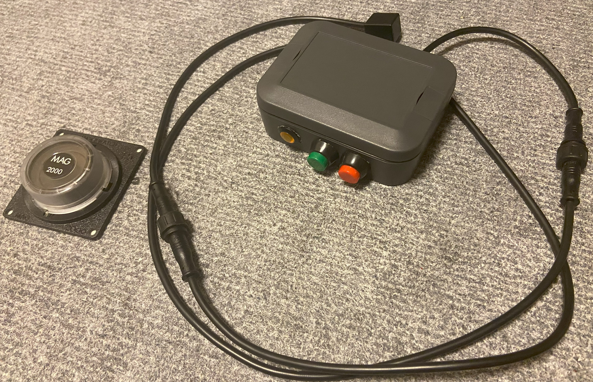

実績紹介
アイティラボがこれまでに対応してきた開発事例を紹介します。

サポート終了したダーツマシンの再生
メーカーサポート終了により補修部品が入手できなくなった業務用ダーツマシンに対し、 制御システムを独自開発基板へ置き換え、既存筐体を活かした再生を実現しました。
Raspberry Pi Compute Module 4を採用した専用制御基板を開発し、 回路設計からソフトウェア開発、製造・検査まで一貫して対応しました。

独自赤外線技術によるボトル管理システム
飲食店におけるキープボトル捜索の課題に対し、 独自開発した赤外線タグ技術を用いて、 低コストかつ高速なボトル捜索システムを開発しました。
ハードウェア（赤外線タグ/タグスキャナー）、スマホアプリ、クラウドシステムまで一貫して開発しています。

レースカー向け衝撃検知センサーの開発
レース中にクラッシュした車両のドライバーへ、 車両が衝撃を受けたことを警告表示するための専用センサーを開発しました。
従来のアナログ式衝撃計器をデジタル的に読み取り、 警告インジケータや事故通知など、後段の情報処理につなげられる構成としました。